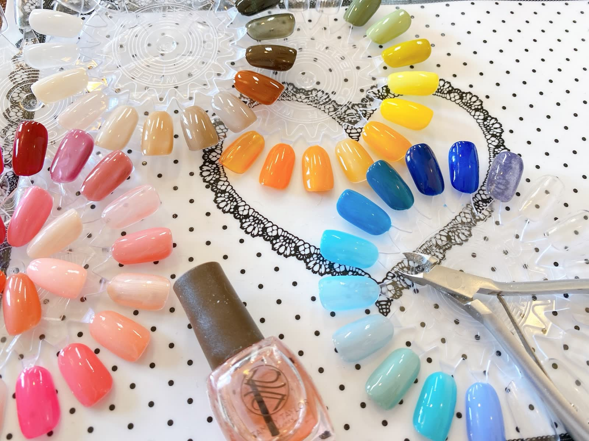

{{ t.en }}
{{ t.t }}
{{ t.d }}
※当院での対応有無【要確認】〇〇 ORTHODONTIC CLINIC
精密な検査と診断をもとに、
ワイヤー矯正・マウスピース矯正から一人ひとりに合った治療をご提案します。
矯正治療の結果は、
始める前の「診断」から変わります。
このようなお悩みをお持ちのかたは、
まずは一度、ご相談ください。
矯正治療にはいくつかの方法があり、それぞれに特徴があります。どの方法が適しているかは、歯並びや骨格、生活スタイルによって異なり、精密検査をもとに歯科医師が判断します。
{{ t.d }}
※当院での対応有無【要確認】| マウスピース矯正 | ワイヤー矯正 | |
|---|---|---|
| {{ r.k }} | {{ r.a }} | {{ r.b }} |
※ 上記は一般的な特徴です。適応できる治療法は、精密検査・診断の結果によって異なります。
〇〇矯正歯科が
{{ r.d }}

photo：担当歯科医師ごあいさつ文【要差替】
経歴・所属学会・資格は、確認できた情報のみを掲載してください。
ご相談のあと、すぐに治療を始める必要はありません。検査結果と治療計画、費用の説明を受けてから、ご自身で判断していただけます。
{{ s.d }}
{{ f.a }}
矯正治療は原則として自由診療（保険適用外）です。装置装着後しばらくは痛みや違和感が出ることがあります。歯磨きが不十分な場合、むし歯や歯周病のリスクが高まります。歯根吸収や歯肉退縮が起こる場合があります。治療後に保定装置を使用しないと、後戻りが起こる可能性があります。治療期間や結果には個人差があります。
費用・期間・回数の目安：【要差替】